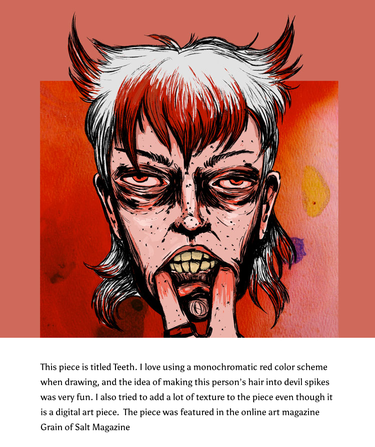
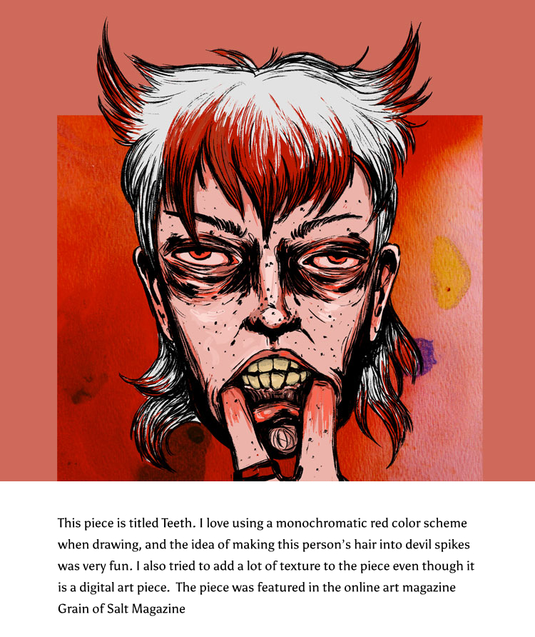

Triggers
Hovering over image, and stoping hovering over image
Rules
The image will fade from black and white to color. The box that is over half of the image describing the image will move down and dissapear. When the user stops hovering the image will stay in color, but the text box will return from the bottom.
Feedback
The image will fade from black and white to color. The box that is over half of the image describing the image will move down and dissapear.When the user stops hovering the image will stay in color, but the text box will return from the bottom.
Loops and Modes
After the user has hovered on the image, it will remain in color.
 
